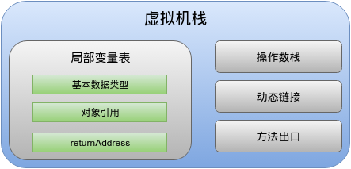
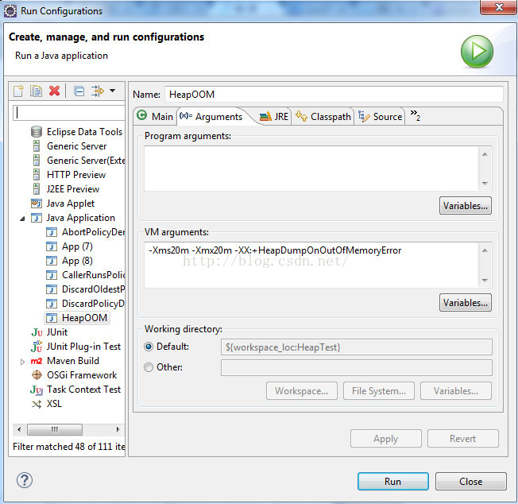
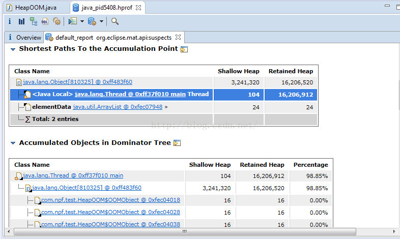
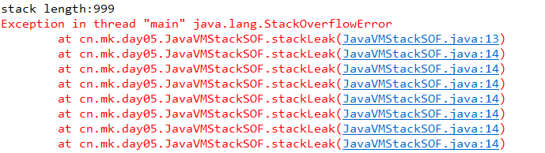
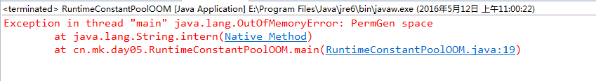
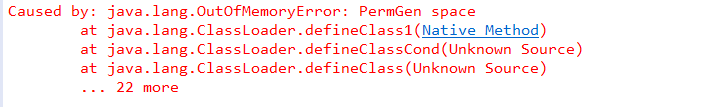
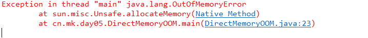

内存区域
Table of Contents
对于Java程序员来说,在虚拟机自动内存管理机制的帮助下,不再需要为每一个new操作去写配对的delete/free代码,不容易出现内存泄漏和内存溢出问题,由虚拟机管理内存这—切看起来都很美好。不过,也正是因为Java程序员把内存控制的权力交给了Java虚拟机, 一旦出现 内存泄漏 和 溢出 方面的问题,如果不了解虚拟机是怎样使用内存的,那么排查错误将会成为一项异常艰难的工作
内存
Java虚拟机在执行Java程序的过程中会把它所管理的内存划分为若干个不同的数据区域。这些区域都有各自的用途,以及创建和销毀的时间,有的区域随着虚拟机进程的启动而存在,有些区域则依赖用户线程的启动和结束而建立和销毀。根据《 Java虚拟机规范(Java SE 7版 )》的规定,Java虚拟机所管理的内存将会包括以下几个运行时数据区域,如下图所示：

程序计数器（PC）
程序计数器 （Program Counter Register）是一块较小的内存空间，它的作用可以看做是 当前线程所执行的字节码行号指示器 ：
- 当前线程 所执行的字节码行号指示器
- 每个线程都有一个
- 线程私有 生命周期与线程相同 随JVM启动而生，JVM关闭而死
- 线程执行Java方法时，记录其正在执行的虚拟机字节码指令地址
- 线程执行Native方法时，计数器记录为空（Undefined）
- 唯一在Java虚拟机规范中没有规定任何OutOfMemoryError情况区域
虚拟机栈
虚拟机栈描述的是Java方法执行的内存模型：每个方法被执行的时候都会同时创建一个 栈帧 （Stack Frame）用于存储：
- 局部变量表
- 操作栈
- 动态链接
方法出口 等

每一个方法被调用直至执行完成的过程，就对应着一个栈帧在虚拟机栈中从入栈到出栈的过程, 同样的这部分也是 线程私有
局部变量表
存放了编译器可知的：
- 各种 基本数据类型 （boolean、byte等）
- 对象引用 （reference类型，它不等同于对象本身，可能是一个指向对象起始地址的引用指针，也可能是指向另一个代表对象的句柄或其他次对象相关的位置）
- returnAddress 类型（指向了一条字节码指令的地址）
局部变量表所需的 内存空间在编译期间完成分配 当进入一个方法时,这个方法需要在帧中分配多大的局部变量空间是完全确定的,在方法运行期间不会改变局部变量表的大小
错误异常
在Java虚拟机规范中，对于此区域规定了两种异常状况：
- 如果线程请求的栈深度大于虚拟机所允许的深度，将抛出 StackOverflowError 异常
- 如果虚拟机栈可以动态扩展，当扩展时无法申请到足够的内存时会抛出 OutOfMemoryError 异常
本地方法栈
本地方法栈 （Native Method Stacks）与虚拟机栈所发挥的作用非常类似，区别在于：虚拟机栈为虚拟机执行Java方法服务，而本地方法栈则是为虚拟机使用到的Native方法服务
与虚拟机栈一样,本地方法栈区域也会拋 StackOverflowError 和 OutOfMemoryError 异常
Java堆
对大多数应用来说 Java堆 （Heap）是Java虚拟机所管理的内存中最大的一块：
- 被所有 线程共享 的一块内存区域
- 在 虚拟机启动 时创建
- 唯一的目的就是 存放对象实例 ：Java对象实例以及数组都在堆上分配（渐渐不是那么 绝对 了）
GC堆
Java堆是 垃圾收集器管理的主要区域 因此Java堆也常被称为 GC堆
由于现在收集器基于分代收集算法，Java堆还可以细分为： 新生代 和 老年代
错误异常
根据Java虚拟机规范的规定，Java堆 可以处于物理上不连续的内存空间中，只要逻辑上是连续的 即可，类似磁盘空间一样。在实现时，既可以实现成固定大小的，也可以是可扩展的，不过当前主流的虚拟机都是按照 可扩展 来实现的。
- 通过 -Xmx 和 -Xms 控制Heap大小
如果在堆中没有内存完成实例分配，并且堆也无法再扩展时，将会抛出 OutOfMemoryError 异常
方法区
方法区与Java堆一样，是各个 线程共享 的内存区域，用于存储已被虚拟机加载的：
- 类信息
- 常量
- 静态变量
- 即时编译器编译后的代码 等数据
Java虚拟机规范对方法区的限制非常宽松，除了和Java堆一样 不需要连续 的内存和可以选择固定大小或者 可拓展 外，还可以选择 不实现垃圾收集 。相对而言，垃圾收集行为在这个区域是比较少出现的，但并非数据进入了方法区就成为了永久代。该区域的内存回收目标主要是针对常量池的回收和对类型的卸载
运行时常量池
运行时常量池是 方法区的一部分 Class文件中除了有关类的版本、字段、方法、接口等描述信息外，还有一项信息是常量池，用于存放 编译期生成的各种字面量和符号引用 这部分内容将在类加载后进入方法区的运行时常量池中存放
运行时常量池相对于Class文件常量池的另一个重要特征是具备 动态性 Java语言并非不要求常量一定只有编译期才能产生，也就是并非预置入Class文件中常量池的内容才能进入方法区运行时常量池，运行期间也可以将新的常量池放入池中
错误异常
根据Java虚拟机规范的规定,当方法区无法满足内存分配需求时,将拋出 OutOfMemoryError 异常
直接内存
在JDK1.4中新加入了NIO类 ,引入了一种基于Channel与Buffer的I/O方式,它可以使用Native函数库直接分配堆外内存,然后通过一个存储在Java堆中的DirectByteBuffer对象作为这块内存的引用进行操作。这样能在一些场景中显著提高性能,因为避免了在Java堆和Native堆中来回复制数据
错误异常
本机直接内存的分配不会受到Java堆大小的限制,但是肯定还是会受到本机总内存(包括RAM以及SWAP区或者分页文件)大小以及处理器寻址空间的限制。服务器管理员在配置虚拟机参数时,会根据实际内存设置-Xmx等参数信息,但经常忽略直接内存,使得各个内存区域总和大于物理内存限制(包括物理的和操作系统级的限制), 从而导致动态扩展时出现 OutOfMemoryError 异常
对象
创建
在语言层面上,创建对象(例如克隆、反序列化)通常仅仅是一个new关键字而已,而在虚拟机中,对象(文中讨论的对象限于 普通 Java对象,不包括 数组 和 Class 对象等)的创建又是怎样一个过程呢?
类加载检查
首先检查这个指令的参数是否能在常量池中定位到一个类的符号引用，并且检查这个这个符号引用代表的类是否已被加载、解析和初始化过。如果没有，那必须先执行相应的类加载过程
划分内存
虚拟机将为新生对象分配内存。对象所需内存的大小在类加载完成后便可完全确定，为对象分配空间的任务等同于把一块确定大小的内存从Java堆中划分出来
- 假设Java堆中内存是绝对规整的,所有用过的内存都放在一边,空闲的内存放在另一边,中间放着一个指针作为分界点的指示器,那所分配内存就仅仅是把那个指针向空闲空间那边挪动一段与对象大小相等的距离,这种分配方式称为 指针碰撞
- 如果Java堆中的内存并不是规整的,已使用的内存和空闲的内存相互交错,那就没有办法简单地进行指针碰撞了,虚拟机就必须维护一个列表,记录上哪些内存块是可用的,在分配的时候从列表中找到一块足够大的空间划分给对象实例, 并更新列表上的记录,这种分配方式称为 空闲列表
- Java堆是否规整由所采用的垃圾收集器是否带有压缩整理功能决定。因此在使用Serial, ParNew等带 Compact 过程的收集器时,系统采用的分配算法是指针碰撞, 而使用CMS这种基于 Mark-Sweep 算法的收集器时,通常采用空闲列表
对象创建在虚拟机中是非常频繁的行为,即使是仅仅修改一个指针所指向的位置,在并发情况下也并不是线程安全的,可能出现正在给对象A分配内存,指针还没来得及修改,对象B又同时使用了原来的指针来分配内存的情况。解决这个问题有两种方案：
- 对分配内存空间的动作进行同步处理：实际上虚拟机采用 CAS加上失败重试 的方式保证更新操作的原子性
- 把内存分配的动作按照线程划分在不同的空间之中进行,即 每个线程在Java堆中预先分配一小块内存,称为本地线程分配缓冲 TLAB 。哪个线程要分配内存,就在哪个线程的TLAB上分配, 只有TLAB用完并分配新的TLAB时,才需要同步锁定
- 虚拟机是否使用TLAB,可以通过 -XX:+/-UseTLAB 参数来设定
内存归零
内存分配完成后，虚拟机需要将 分配到的内存空间都初始化为零值 （不包括对象头）， 如果使用TLAB,这一工作过程也可以提前至TLAB分配时进行
设置对象头
虚拟机要对对象进行必要的设置，例如这个对象是哪个类的实例、如何才能找到类的元数据信息、对象的hashcode、对象的GC分代年龄等信息。这些信息存放在对象的 对象头 之中。根据虚拟机当前的运行状态不同，对象头会有不同的设置方式
构造器
在上面工作都完成之后，从虚拟机的视角来看，一个新的对象已经产生了，但是从Java程序的视角来看，对象创建才刚刚开始 构造器方法还没有执行，所有的字段都还为零 ．一般来说，执行new指令之后会接着执行init方法，把对象按照程序员的意愿进行初始化，这样一个真正可用的对象才算完全产生出来
// 确保常量池中存放的是已解释的类 if (!constants->tag_at(index).is_unresolved_klass()) { // 断言确保是klassOop和instanceKlassOop（这部分下一节介绍） oop entry = (klassOop) *constants->obj_at_addr(index); assert(entry->is_klass(), "Should be resolved klass"); klassOop k_entry = (klassOop) entry; assert(k_entry->klass_part()->oop_is_instance(), "Should be instanceKlass"); instanceKlass* ik = (instanceKlass*) k_entry->klass_part(); // 确保对象所属类型已经经过初始化阶段 if ( ik->is_initialized() && ik->can_be_fastpath_allocated() ) { // 取对象长度 size_t obj_size = ik->size_helper(); oop result = NULL; // 记录是否需要将对象所有字段置零值 bool need_zero = !ZeroTLAB; // 是否在TLAB中分配对象 if (UseTLAB) { result = (oop) THREAD->tlab().allocate(obj_size); } if (result == NULL) { need_zero = true; // 直接在eden中分配对象 retry: HeapWord* compare_to = *Universe::heap()->top_addr(); HeapWord* new_top = compare_to + obj_size; // cmpxchg是x86中的CAS指令，这里是一个C++方法，通过CAS方式分配空间，并发失败的话，转到retry中重试直至成功分配为止 if (new_top <= *Universe::heap()->end_addr()) { if (Atomic::cmpxchg_ptr(new_top, Universe::heap()->top_addr(), compare_to) != compare_to) { goto retry; } result = (oop) compare_to; } } if (result != NULL) { // 如果需要，为对象初始化零值 if (need_zero ) { HeapWord* to_zero = (HeapWord*) result + sizeof(oopDesc) / oopSize; obj_size -= sizeof(oopDesc) / oopSize; if (obj_size > 0 ) { memset(to_zero, 0, obj_size * HeapWordSize); } } // 根据是否启用偏向锁，设置对象头信息 if (UseBiasedLocking) { result->set_mark(ik->prototype_header()); } else { result->set_mark(markOopDesc::prototype()); } result->set_klass_gap(0); result->set_klass(k_entry); // 将对象引用入栈，继续执行下一条指令 SET_STACK_OBJECT(result, 0); UPDATE_PC_AND_TOS_AND_CONTINUE(3, 1); } } }
内存布局
在HotSpot虚拟机中,对象在内存中存储的布局可以分为3块区域:
- 对象头
- 实例数据
- 对齐填充
对象头
HotSpot虚拟机的对象头包括两部分信息：
- 存储对象自身的运行时数据：如HashCode、GC分代年龄、锁状态标志、线程持有的锁、偏向线程ID、偏向时间戳等等
这部分数据的长度在32位和64位的虚拟机中分别为32个和64个Bits，官方称它为 Mark Word. 对象需要存储的运行时数据很多，其实已经超出了32、64位Bitmap结构所能记录的限度，但是对象头信息是与对象自身定义的数据无关的额外存储成本，考虑到虚拟机的空间效率，Mark Word被设计成一个 非固定的数据结构 以便在极小的空间内存储尽量多的信息，它会根据对象的状态复用自己的存储空间。例如在32位的HotSpot虚拟机中对象未被锁定的状态下，Mark Word的32个Bits空间中的25Bits用于存储对象HashCode，4Bits用于存储对象分代年龄，2Bits用于存储锁标志位，1Bit固定为0，在其他状态（轻量级锁定、重量级锁定、GC标记、可偏向）下对象的存储内容如下表所示：
| 存储内容 | 标志位 | 状态 |
| 对象哈希码、对象分代年龄 | 01 | 未锁定 |
| 指向锁记录的指针 | 00 | 轻量级锁定 |
| 指向重量级锁的指针 | 10 | 膨胀（重量级锁定） |
| 空，不需要记录信息 | 11 | GC标记 |
| 偏向线程ID、偏向时间戳、对象分代年龄 | 01 | 可偏向 |
- 类型指针：对象 指向它的类元数据的指针 ，虚拟机通过这个指针来确定这个对象是哪个类的实例
- 并不是所有的虚拟机实现都必须在对象数据上保留类型指针，换句话说查找对象的元数据信息并不一定要经过对象本身
- 如果对象是一个Java数组，那在对象头中还必须有一块用于 记录数组长度 的数据，因为虚拟机可以通过普通Java对象的元数据信息确定Java对象的大小，但是从数组的元数据中无法确定数组的大小
// Bit-format of an object header (most significant first, big endian layout below): // // 32 bits: // -------- // hash:25 ------------>| age:4 biased_lock:1 lock:2 (normal object) // JavaThread*:23 epoch:2 age:4 biased_lock:1 lock:2 (biased object) // size:32 ------------------------------------------>| (CMS free block) // PromotedObject*:29 ---------->| promo_bits:3 ----->| (CMS promoted object)
实例数据
对象真正存储的有效信息，也既是在程序代码里面所定义的各种类型的字段内容，无论是从父类继承下来的，还是在子类中定义的都需要记录起来
这部分的存储顺序会受到 虚拟机分配策略参数 和 字段在Java源码中定义顺序 的影响．HotSpot虚拟机默认的分配策略为 longs/doubles、ints、shorts/chars、bytes/booleans、oops :
- 相同宽度的字段总是被分配到一起
- 在父类中定义的变量会出现在子类之前
- 如果 CompactFields 参数值为true（默认为true），那子类之中较窄的变量也可能会插入到父类变量的空隙之中
对齐填充
由于HotSpot VM的自动内存管理系统要求对象起始地址必须是8字节的整数倍，换句话说就是对象的大小必须是8字节的整数倍。对象头部分正好似8字节的倍数（1倍或者2倍），因此当对象实例数据部分没有对齐的话，就需要通过 对齐填充 来补全
对象的访问定位
Java程序需要通过栈上的 reference数据 来操作堆上的具体对象。由于reference类型在Java虚拟机规范里面只规定了是 一个指向对象的引用 ，并没有定义这个引用应该通过什么种方式去定位、访问到堆中的对象的具体位置，对象访问方式也是取决于虚拟机实现而定的。主流的访问方式有 使用句柄 和 直接指针 两种:
使用句柄
Java堆中将会划分出一块内存来作为句柄池，reference中存储的就是对象的句柄地址，而句柄中包含了 对象实例数据 与 类型数据 的具体各自的地址信息。如图所示：

直接指针
reference变量中直接存储的就是对象的地址，而java堆对象一部分存储了对象实例数据，另外一部分存储了对象类型数据，如下图所示：

优劣
这两种对象访问方式各有优势：
- 使用句柄来访问的最大好处就是:reference中存储的是稳定句柄地址，在对象被移动时只会改变句柄中的实例数据指针，而reference本身不需要被修改
- 使用直接指针来访问最大的好处：速度更快，它节省了一次指针定位的时间开销，由于对象访问的在Java中非常频繁，因此这类开销积小成多也是一项非常可观的执行成本
OutOfMemory异常
在Java虚拟机规范的描述中,除了程序计数器外,虚拟机内存的其他几个运行时区域都有发生 OutOfMemoryError 异常的可能。现在将通过若干实例来验证异常发生的场景,并且会初步介绍几个与内存相关的最基本的虚拟机参数
目的有两个:
- 通过代码验证Java虚拟机规范中描述的各个运行时区域存储的内容
- 根据异常的信息快速判断是哪个区域的内存溢出,知道什么样的代码可能会导致这些区域内存溢出,以及出现这些异常后该如何处理
代码的开头都注释了执行时所需要设置的虚拟机启动参数(注释中 VM Args 后面跟着的参数),这些参数对实验的结果有直接影响,读者调试代码的时候千万不要忽略。如果使用控制台命令来执行程序,那直接跟在Java命令之后书写就可以。如果使用 EclipselDE,则可以下图在Debug/Run页签中的设置

代码都是基于Sun公司的HotSpot虚拟机运行的,对于不同公司的不同版本的虚拟机 ,参数和程序运行的结果可能会有所差别
堆溢出
Java堆用于存储对象实例,只要不断地创建对象,并且保证GC Roots到对象之间有可达路径来避免垃圾回收机制清除这些对象,那么在对象数量到达最大堆的容量限制后就会产生内存溢出异常
下面代码限制Java堆的大小为20MB,不可扩展(将堆的最小值 -Xms 参数与最大值 -Xmx 参数设置为一样即可避免堆自动扩展),通过参数 -XX:+HeapDumpOnOutOfMemoryError 可以让虚拟机在出现内存溢出异常时Dump出当前的内存堆转储快照以便事后进行分析
/** * VM Args：-Xms20m -Xmx20m -XX:+HeapDumpOnOutOfMemoryError * @author zzm */ public class HeapOOM { static class OOMObject { } public static void main(String[] args) { List<OOMObject> list = new ArrayList<OOMObject>(); while (true) { list.add(new OOMObject()); } } }
java.lang.OutOfMemoryError :Java heap space Dumping heap to java_pid3404.hprof. Heap dump file created[22045981 bytes in 0.663 secs]
Java堆内存的OOM异常是实际应用中常见的内存溢出异常情况。当出现Java堆内存溢出时 ,异常堆栈信息 java.lang.OutOfMemoryError 会跟着进一步提示 Java heap space
要解决这个区域的异常,一般的手段是先通过 内存映像分析 工具(如 Eclipse Memory Analyzer ) 对Dump出来的堆转储快照进行分析,重点是确认内存中的对象是否是必要的,也就是要先分清楚到底是出现了 内存泄漏 ( Memory Leak ) 还是 内存溢出 ( Memory Overflow ) 。 下图显示了使用Eclipse Memory Analyzer打开的堆转储快照文件

如果是内存泄漏，可进一步通过工具 查看泄漏对象到GC Roots的引用链 ，于是就能找到泄漏对象是通过怎样的路径与GC Roots相关联并导致垃圾收集器无法自动回收它们的。掌握了泄漏对象的类型信息，以及GC Roots引用链的信息，就可以比较准确地定位出泄漏代码的位置。
如果不存在泄漏，换句话说就是内存中的对象确实都还必须存活着，那就应当检查虚拟机的堆参数（ -Xmx 与 -Xms ），与机器物理内存对比看是否还可以调大，从代码上检查是否存在某些对象生命周期过长、持有状态时间过长的情况，尝试减少程序运行期的内存消耗
虚拟机栈和本地方法栈溢出
由于在HotSpot虚拟机中并不区分虚拟机栈和本地方法栈，因此，对于HotSpot来说，虽然 -Xoss 参数（设置本地方法栈大小）存在，但实际上是无效的，栈容量只有 -Xss 参数设定。关于虚拟机栈和本地方法栈，在Java虚拟机规范中描述了两种异常：
- 如果线程请求的栈深度大于虚拟机所允许的最大深度，将抛出 StackOverflowError 异常
- 如果虚拟机在扩展时无法申请到足够的内存空间，则抛出 OutOfMemoryError 异常
这里把异常分成两种情况，看似更加严谨，但却存在着一些互相重叠的地方： 当栈空间无法继续分配时，到底是内存太小，还是已使用的栈空间太大 ，其本质上只是对同一件事情的两种描述而已
将实验范围限制于单线程中的操作，尝试了下面两种方法均无法让虚拟机产生 OutOfMemoryError 异常，尝试的结果都是获得 StackOverflowError 异常，测试代码：
- 使用 -Xss 参数减少栈内存容量。抛出 StackOverflowError 异常，异常出现时输出的堆栈深度相应缩小
- 定义了大量的本地变量，增大此方法帧中本地变量表的长度。抛出 StackOverflowError 异常时输出的堆栈深度相应缩小
/** * VM Args: -Xss128k * @author mk * */ public class JavaVMStackSOF { private int stackLength = 1; public void stackLeak() { stackLength++; stackLeak(); } public static void main(String[] args) throws Throwable { JavaVMStackSOF oom = new JavaVMStackSOF(); try { oom.stackLeak(); } catch (Throwable e) { System.out.println("stack length:" + oom.stackLength); throw e; } } }
运行结果如下所示：

实验结果表明：在单个线程下，无论是由于栈帧太大还是虚拟机栈容量太小，当内存无法分配的时候，虚拟机抛出的都是 StackOverflowError 异常
如果测试时不限于单线程，通过不断地建立线程的方法到是可以产生内存溢出异常，但是这样产生的 内存溢出异常与栈空间是否足够大并不存在任何联系 ，或者准确地说，在这种情况下，为每个线程的栈分配的内存越大，反而越容易产生内存溢出异常
操作系统分配给每个进程的内存是有限制的，譬如32位的Windows限制为2GB 虚拟机提供了参数来控制Java堆和方法区这两部分内存的最大值。剩余的内存为2GB（操作系统限制）减去Xmx（最大堆容量），再减去MaxPermSize（最大方法区容量） 程序计数器消耗内存很小，可以忽略掉 如果虚拟机进程本身耗费的内存不计算在内，剩下的内存就由虚拟机栈和本地方法栈瓜分了 每个线程分配到的栈容量越大，可以建立的线程数量自然就越少，建立线程时就越容易把剩下的内存耗尽
出现 StackOverflowError 异常时有错误堆栈可以阅读，相对来说，比较容易找到问题的所在。而且，如果使用虚拟机默认参数，栈深度在大多数情况下（因为每个方法压入栈的帧大小并不是一样的，所以只能说在大多数情况下）达到1000~2000完全没有问题，对于正常的方法调用（包括递归），这个深度应该完全够用了。但是，如果是建立过多线程导致的内存溢出，在不能减少线程数或者更换64位虚拟机的情况下，就只能通过 减少最大堆和减少栈容量 来换取更多的线程。如果没有这方面的处理经验，这种通过 减少内存 的手段来解决内存溢出的方式会比较难以想到。创建线程导致内存溢出异常代码如下所示：
/** * VM Args: -Xss2M (这时候不妨设置大些) * @author mk * */ public class JavaVMStackOOM { private void dontStop() { while (true) { } } public void stackLeakByThread() { while (true) { Thread thread = new Thread(new Runnable() { @Override public void run() { dontStop(); } }); thread.start(); } } public static void main(String[] args) { JavaVMStackOOM oom = new JavaVMStackOOM(); oom.stackLeakByThread(); } }
方法区和运行时常量池溢出
常量池
由于运行时常量池是方法区的一部分，因此这两个区域的溢出测试就放在一起进行。前面提到 JDK 1.7 开始逐步 去永久代 的事情，再次就以测试代码观察一下这件事对程序的实际影响
String.intern() 是一个 Native 方法，它的作用是：如果字符串常量池中已经包含一个等于此String对象的字符串，则返回代表池中这个字符串的String对象；否则，将此String对象包含的字符串添加到常量池中，并且返回此String对象的引用。在 JDK 1.6 及之前的版本中，由于常量池分配在永久代内，可以通过 -XX:PermSize 和 -XX:MaxPermSize 限制方法区大小，从而间接限制其中常量池的容量，代码如下所示：
/** * VM Args: -XX:PermSize=10M -XX:MaxPermSize=10M * @author mk * */ public class RuntimeConstantPoolOOM { public static void main(String[] args) { // 使用 List 保持着常量池引用，避免 Full GC 回收常量池行为 List<String> list = new ArrayList<String>(); // 10MB 的 PermSize 在 integer 范围内存在产生 OOM 了 int i = 0; while (true) { list.add(String.valueOf(i++).intern()); } } }
运行结果如下所示：

从运行结果中可以看到，运行时常量池溢出，在 OutOfMemoryError 后面跟随的提示信息是 PermGen space ，说明运行常量池属于方法区（HotSpot虚拟机中的永久代）的一部分
而使用 JDK 1.7 运行这段程序就不会得到相同的结果，while循环将一直进行下去。关于这个字符串常量池的实现问题，还可以引申出一个更有意思的影响： String.intern() 返回引用的测试，代码如下所示：
public class RuntimeConstantPoolOOM { public static void main(String[] args) { String str1 = new StringBuilder("计算机").append("软件").toString(); System.out.println(str1.intern() == str1); String str2 = new StringBuilder("ja").append("va").toString(); System.out.println(str2.intern() == str2); } }
这段代码在 JDK 1.6 中运行，会得到两个 false ，而在 JDK 1.7 中运行，会得到一个 true 和 一个 false 。产生差异的原因是：在 JDK 1.6 中， intern() 方法会把首次遇到的字符串实例 复制到永久代 中，返回的也是永久代中这个字符串实例的引用，而由 StringBuilder 创建的字符串实例在 Java堆 上，所以不是同一个引用，将返回false。而 JDK 1.7 intern() 实现 不会再复制实例 ，只是在常量池中记录首次出现的实例引用，因此intern()返回的引用和由StringBuilder创建的那个字符串实例是同一个。对str2比较返回false是因为 java这个字符串在执行StringBuilder.toString()之前已经出现过，字符串常量池中已经有它的引用了，不符合首次出现的原则 ，而 计算机软件这个字符是首次出现的，因此返回true
方法区
方法区用于存放Class的相关信息，如类名、访问修饰符、常量池、字段描述、方法描述等。对于这些区域的测试，基本的思路是运行时产生大量的类去填满方法区，直到溢出。虽然直接使用 Java SE API 也可以动态产生类（如反射时的 GeneratedConstructorAccessor 和 动态代理 等），但在本次实验中中操作起来比较麻烦。借助 CGLib 直接操作字节码运行时生成了大量的动态类
/** * VM Args: -XX:PermSize=10M -XX:MaxPermSize=10M * @author mk * */ public class JavaMethodAreadOOM { public static void main(String[] args) { while (true) { Enhancer enhancer = new Enhancer(); enhancer.setSuperclass(OOMObject.class); enhancer.setUseCache(false); enhancer.setCallback(new MethodInterceptor() { @Override public Object intercept(Object obj, Method method, Object[] args, MethodProxy proxy) throws Throwable { return proxy.invokeSuper(obj, args); } }); enhancer.create(); } } static class OOMObject { } }
运行结果如下图所示：

在这个例子中模拟的场景并非纯粹是一个实验，这样的应用经常会出现在实际应用中
当前的很多主流框架，如Spring、Hibernate，在对类进行增强时，都会使用到 _CGLib_ 这类字节码技术
增强的类越多，就需要越大的方法区来保证动态生成的Class可以加载如内存
另外，JVM上的动态语言（例如 _Groovy_ 等）通常都会持续创建类来实现语言的动态性，随着这类语言的流行，也越来越容易遇到相似的溢出场景
方法区溢出也是一种场景的内存溢出异常，一个类要被垃圾收集器回收掉，判定条件是比较苛刻的。在 经常动态生成大量Class的应用中，需要特别注意类的回收状况 。这类场景除了上面提到的程序使用了 CGLib 字节码增强和动态语言之外，常见的还有：大量 JSP 或动态产生 JSP 文件的应用（JSP第一次运行需要编译为Java类）、基于 OSGI 的应用（即使是同一个类文件，被不同的加载器加载也会视为不同的类）等
直接内存溢出
DirectMemory 容量可通过 -XX:MaxDirectMemorySize 指定，如果不指定，则默认与 Java 堆最大值（ -Xmx 指定）一样，下面代码绕过了 DirectByteBuffer 类，直接通过返回获取 Unsafe 实例进行内存分配（Unsafe类的 getUnsafe() 方法限制了只有引导类加载器才会返回实例，也就是设计者希望只有 rt.jar 中的类才能使用Unsafe的功能）。因为，虽然使用 DirectByteBuffer 分配内存也会抛出内存溢出异常，但它抛出异常时并没有真正向操作系统申请分配内存，而是通过计算得知内存无法分配，于是手动抛出异常，真正申请分配内存的方法是 unsafe.allocateMemory() 代码如下所示：
/** * VM Args: -Xmx20M -XX:MaxDirectMemorySize=10M * @author mk * */ public class DirectMemoryOOM { private static final int _1MB = 1024 * 1024; public static void main(String[] args) throws Exception { Field unsafeField = Unsafe.class.getDeclaredFields()[0]; unsafeField.setAccessible(true); Unsafe unsafe = (Unsafe)unsafeField.get(null); while (true) { unsafe.allocateMemory(_1MB); } } }
运行结果如下所示：

DirectMemory导致的内存溢出 ，一个明显的特征是在 Heap Dump 文件中不会看见明显的异常，如果 发现OOM之后Dump文件很小，而程序中又直接或间接使用了NIO ，那就可以考虑检测一下是不是这方面的原因